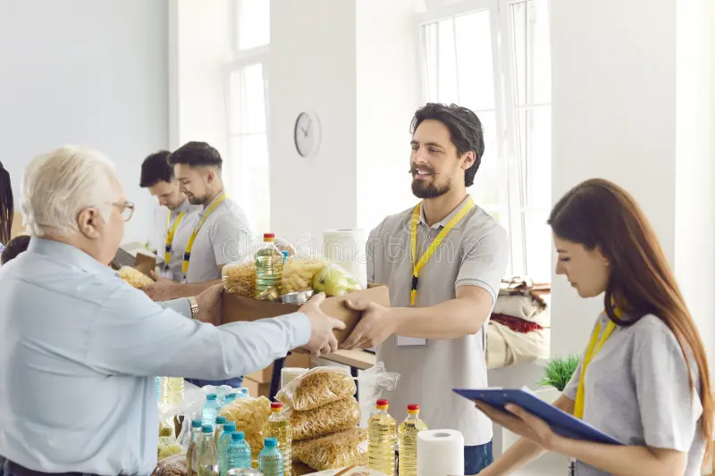

Somos una organización sin fines de lucro que cree que la comida no se tira: se comparte.

Mesa Abierta nació en 2018 cuando un grupo de vecinos notó que las verdulerías del barrio tiraban cajones de fruta y verdura en buen estado todos los días, mientras a pocas cuadras un comedor no tenía qué cocinar.
Lo que empezó con una camioneta prestada hoy es una red que conecta empresas, voluntarios y comedores de toda la ciudad.
Reducir el desperdicio de alimentos y combatir el hambre acercando comida en buen estado a quienes la necesitan.
Una comunidad donde ningún alimento apto se desperdicie y ninguna familia se quede sin comer.
Solidaridad, transparencia, respeto por la dignidad de las personas y cuidado del medio ambiente.
Las personas que hacen posible que Mesa Abierta funcione todos los días.